“. . . that certain piece and parcel of land lying and being in the Town of Hague, County of Warren, State of New York . . . Lot 97 of the Ellis Patent, bounded in part or wholly by Lots 96, 109 and 98, supposed to contain 161 acres of land . . . being the same place known as the Benjamin Van Buren farm.”
From the deed description of most of the properties presently on or overlooking Van Buren Bay on Lake George
In 1847, when the Birch Glen and Penfield Cottage properties first come into our view, the land was part of what was then known as the Ellis Patent. In present day terms, lot 97 of the Ellis Patent comprised all of the land from the bend of the road below the Silver Bay General Store to a point just north of Paine Hall, and from the shore of Van Buren Bay at Penfield Cottage and Tower Point to the cliffs above Terrace Road. But long before there were patents and parcels, names and numbers, all was wilderness. The area around Lake George and southern Lake Champlain, which we cherish for its tranquility and beauty, was the scene of persistent conflict and war. Although there were no permanent native settlements in the area, Iroquois from the Mohawk River valley and Algonquin and Huron tribes along the St. Lawrence all claimed it as their hunting ground, clashed frequently when they met, and raided each other’s towns in deliberate acts of warfare. When the French and English arrived, they brought their own conflicts to the area, fighting with their Indian allies first for control of the fur trade and then, more seriously, when a series of wars in Europe between England and France spilled over into their North American colonies. The French and Indian War, or Seven Years War as it was known in Europe, 1756-1763, was the last of these wars. It was a serious war in this area, involving the movement of large bodies of troops up and down Lake George, pitched battles, and the building of three forts: at the head of Lake George, at Ticonderoga and at Crown point. After some initial set-backs, the British achieved victory and with it control of France’s North American territories. And now the British assumed not only sovereignty over the land but ownership and, with that, the right to grant, sell or use any land that had not been already acquired in some formal way.1
During the French and Indian War, the British Crown, in order to encourage enlistments, especially from its American colonists, had offered grants of land to soldiers who would serve in that war – 5,000 acres to field officers, 3,000 for captains, 2,000 for lieutenants, 500 for non-commissioned officers and 50 for ordinary soldiers. After 1763, many soldiers took advantage of the offer, though most expected to sell their land rather than settle on it. Lieutenant John Stoughton, who fought at Ticonderoga, then Fort Carillon, was one of three officers who applied for grants with the intention of actually moving to the area. He was awarded 2,000 acres on the La Chute River at the outlet of Lake George. He moved from his home in Connecticut to the nascent Village of Ticonderoga in 1764, bringing his extended family: his wife Ruth, two brothers, their wives and two children. His daughter Elizabeth was born in Ticonderoga in 1766. He built a house – described as a blockhouse – on Lake George, at the old landing site, the beginning of the portage to Lake Champlain, and he may have been planning to establish a trading post for other new settlers. Tragically, he died in 1767, drowning in the Lake George narrows while sailing a boat down the lake loaded with produce and livestock. His family moved back to Connecticut, and most of his land was sold to an English land speculator, Alexander Ellice. While Stoughton has no role in the history of our properties, he does serve to bring Alexander Ellice into the picture.2
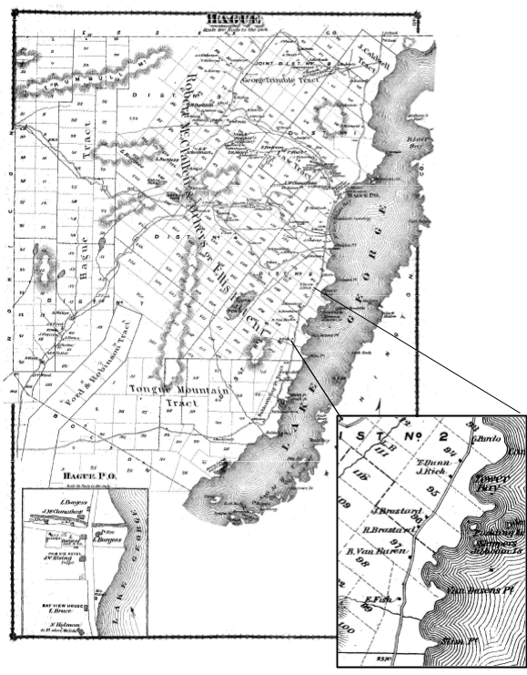
Alexander Ellice was a fur trader in Schenectady, New York. In Canada in later years, he would become an important figure in that country’s commercial and political development and he personally would make a fortune in what he called “the empire of beaver.” But he started out in Schenectady when he and his four brothers arrived from Scotland in 1765. He established a successful fur trading company, importing manufactured goods from Scotland for trade with indigenous tribes of New York and the lower Great Lakes, most likely through British or French agents. When tensions between Britain and her American colonies in the 1770s and the subsequent ban on the import of British goods forced Ellice to close down his company, he moved to Montreal and resumed his fur trading business there. But, while still in New York, he had begun the practice of investing his business profits in land. Whether or not he actually visited Ticonderoga we do not know, but he seems to have been interested in the land there that became available at the end of the French and Indian War. He eventually purchased most of the property in and around Ticonderoga, and at some point acquired ownership of a large parcel of land, perhaps 20,000 acres, extending from the southern border of the Town of Ticonderoga, now the line between Essex and Warren Counties, to Sabbath Day Point. We know this as the Ellis Patent, shown on the map of Hague taken from an 1876 Atlas of Warren County. The term “patent” suggests that the land was a direct grant from the British Crown for service or payment. In this case, we can assume that Ellice paid for it. Typically, in these transactions, it was the responsibility of the proprietor, the owner of the patent, to survey, subdivide and convey individual allotments to other buyers.
When Alexander Ellice acquired the Ellis Patent, he may not have realized that most of the land, unlike the area around Ticonderoga and Trout Brook Valley where he already had property, was not suited for agriculture. With no substantial water falls for power, it would not have attracted industry. And graphite and garnet would not be discovered until the 1880s, so there was no promise of mining. In short, his investment was a bust. He may have recovered his money with the sale of a few parcels of the land, but there was no market for most of it. Still, he and his son Edward held the property for almost a hundred years, until Edward decided to sell it along with other holdings in the U.S. and Canada toward the end of his life. He sold it to Charles Wheeler of Ticonderoga for $600 “lawful money of the United States of America” on October 13, 1871.3
By that time, several “tracts” of land had already been sold off. The remaining land had been divided by survey into numbered lots for individual purchasers. The purchasers of the larger tracts, like Ellis, were probably land speculators, though the buyers of some small properties, such as the Sabbath Bay Tract, may have been occupiers who were simply gaining title to what they thought they already owned. There are probably many good stories here, but we are interested only in Lot 97, or as our deeds describe it, “the Benjamin Van Buren Farm.”
U.S. Census records show that the Benjamin and Jane Van Buren, with their two daughters, settled on Lot 97, in the Town of Hague, in 1847. They had moved from Ticonderoga, where both had been employed at The Pavilion, a summer hotel on the grounds of the old fort, where their daughters had been born. Census records suggest that Jane Wheeler Van Buren was the daughter of Ticonderoga resident John Wheeler. There were several Wheeler families living in Ticonderoga at that time, but only John had a daughter Jane’s age. Charles Wheeler may well have been John’s brother.4
I have come to believe that Charles Wheeler may already have been Edward Ellice’ local agent, because then, even before he became the owner of the land, he would have been in a position to allow his niece Jane and her husband Benjamin Van Buren to settle on land within the Ellis Patent. A large wall map of Warren County, dated 1858, at the Crandall Library in Glens Falls shows “B. Van Buren” occupying Lot 97, so there was no secret about it. Charles Wheeler would have known. There are no records to show whether Van Buren paid rent or whether he had an agreement to buy the land later. The family lived on that property for 28 years until Julia Van Buren bought it in 1875.
The earliest official record we have attesting to the Van Buren family’s presence in the Town of Hague is the U.S. Census of 1850. Here we learn that Benjamin’s wife’s name was Jane, that she was much younger than her husband, and that they had three young children. Benjamin is described as a farmer, and the M under Race, indicates that he was mulatto, or of mixed race. The census further reports, though not copied below, that Benjamin, Jane, Lucinda and Julia had been living at that site for three years, confirming that they had arrived in 1847.5 There were already a number of people living in Hague and Sabbath Day Point, but the Van Burens were the first permanent residents of what we now call Silver Bay.
United States Federal Census - 1850, Hague, Warren County, New York
| Age | Sex | Race | Occupation | |
|---|---|---|---|---|
| Benjamin Van Buren | 53 | M | M | Farmer |
| Jane Van Buren | 26 | F | House Keeper | |
| Lucinda Van Buren | 6 | F | ||
| Julia Van Buren | 4 | F | ||
| Benjamin Van Buren Jr. | 1 | M |
We know quite a bit about the Van Buren family. Benjamin was probably the grandson of Henry Van Buren, “a free Negro” of Troy, New York. He was born in Troy in 1800 of an unnamed white father and a black mother, probably Henry’s daughter.6 We know nothing about Benjamin’s early life until he shows up in the Census of 1830 living as a servant in the household of William Ferris Pell in Ticonderoga. It was at Pell’s house/hotel, the Pavilion, that he met his wife Jane, and it is there, “on the old fort grounds” that they had their first two children.
Benjamin and Jane settled in the Town of Hague and raised their growing family there. In the 1865 New York census records, Benjamin is listed as a farmer, having six acres of improved land, probably alongside the Hague to Sabbath Day Point road. He grew a little corn and rye and some potatoes, but his major source of income seems to have been the wool from sheep he grazed on four acres of pasture.7 He also had twenty-five apple trees, which produced one hundred bushels
of cider apples, another source of income. Six acres, out of the whole of Lot 97, was not a great deal of cleared land, but I can picture the corn, potatoes and other kitchen crops growing on the land across the road from his cabin, on what is now the Penfield and Mc Loughlin properties, and sheep grazing on the green meadow below Paine Hall. Benjamin seems to have become a fairly resourceful farmer.
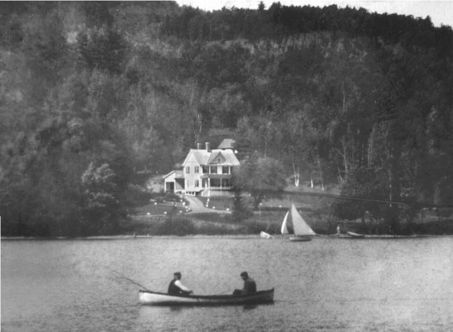
An early picture of Birch Glen, taken before Penfield Cottage was built, shows the roof of a building behind the house. You can still find the site of that building, though all that remains is a fairly small hard flat floor with trees growing up through it. Other photos confirm, with the help of a magnifying glass, the existence of that building and perhaps one or two more in a cleared space further up the slope. I have come to believe, admittedly with no physical evidence, that the site of the main Van Buren house, described in the 1875 census as a log cabin, must have been where Birch Glen stands now. The relatively flat space would have provided ample room for a larger home. Benjamin Van Buren may even have dug the well next to the kitchen door that still provides good clean water. The smaller cabin above could not have accommodated a family of ten, though it might have been a good place to put the boys.8 Other structures on the upper slope look more like farm buildings. Even today, you can see evidence of a wagon track on the slope to the right of Birch Glen leading from the road up to the barns.
Benjamin and Jane raised eight children on the land: three daughters and five sons. We get a picture of the family from United States Federal Census of 1860:
United States Federal Census - 1860, Hague, Warren County, New York
| Age | Sex | Color | Occupation | Place of Birth |
Married within year |
|
|---|---|---|---|---|---|---|
| Benj Van Buren | 54 | M | M | Farmer | NY | |
| Jane Van Buren | 35 | F | House Keeper | NY | ||
| Julia Van Buren | 13 | F | M | NY | ||
| Benj Van Buren Jr | 11 | M | M | NY | ||
| Martin Van Buren | 9 | M | M | NY | ||
| Hilon E. Van Buren | 7 | M | M | NY | ||
| Wm. H Van Buren | 4 | M | M | NY | ||
| Chas Van Buren | 2 | M | M | NY | ||
| Wm. H Wheeler | 22 | M | Farm Laborer | NY | m | |
| Lucinda Wheeler | 15 | F | House Work | NY | m |
After 1860
Mary J. Van Buren, daughter, born 1861
Cora Ida Van Buren, daughter of Benj Jr, born 1868
Jane is shown as white but Benjamin and the children are designated M, except for Lucinda, who, in marrying William Wheeler, becomes white and earns an occupation, House Work. William was probably assisting his father-in-law as a Farm Laborer. The couple lived with her family for a year before moving to Bolton, where William joined his father in work. They were both carpenters.9
I have added two more family members to the census record. Mary, the last child, was born in 1861 and Cora, Benjamin Jr.’s daughter, arrived in 1869. Benjamin Jr. had left the family a few years earlier and found work in Canada10, according to family tradition. There he fathered a daughter, but her mother, perhaps Native American, died in childbirth. Benjamin, Jr. brought his baby back home to Hague and then returned to his work, leaving his daughter to be raised by his older sister, Julia. Sadly, Jane did not live long enough to see this child, her granddaughter. She died in 1866. Benjamin must have been devastated. A sign of his love is the handsome headstone he placed over her grave at the old Hague cemetery on Pine Orchard Road, just south of the village.
But life went on. In spite of his loss, Benjamin continued his work on the farm, depending more and more on the help of his children. Responsibility for the house and two small children must have fallen to Julia. The boys would have helped their father with the field crops, care of the animals, and other chores. As they grew older, they may have found work in the Hague area as hired hands or day laborers, bringing in additional income for the family. We know, for example, that William worked as a hired hand on a farm just north of Lot 97, the land associated now with the Parlin family properties and Pudding Island Road.
At some point, Julia began working at the hotel at Sabbath Day Point owned by Samuel and Cynthia Western, perhaps even living there during the busy summer months. She must have developed a close relationship with the couple, because a few years later she felt comfortable enough to ask them for a big favor. For some time, she and her father had probably been worried about the security of their farm. In 1864, John and Olive Braisted had purchased most of Ellis Lot 96 and moved with their children into a house they built just around the corner from the Van Buren place. Their property is shown on the 1876 map. I would like to think they were good neighbors; they had eight children just about the same ages as the Van Burens. But Olive’s father, who had come with them, was a land speculator and may have had his eye on other good deals in the area. There was already some interest in Lot 98, to the south, where there had been several unsuccessful attempts to open a hotel. The Van Burens must have worried that their farm might be sold out from under them before they had a chance to raise the money to buy it. For some reason, they did not, or could not, reach an agreement with Charles Wheeler. Perhaps their relationship with him had soured. He may have felt he had had an obligation to his niece Jane, but not necessarily to her husband. What could the family do? Julia found a way.
In 1873, two years after he had purchased the unsold land within the Ellis Patent, Charles Wheeler sold Lot 97 to Samuel and Cynthis Western for $250. Two years, later, Julia bought the property from the Westerns for $253. I think Julia must have asked the Westerns to buy the land for her and hold it until she and the family were able to come up with the funds. We don’t know the whole story here.
What we do know is that the Van Buren family now had legal title to the land they had lived on since 1847. Benjamin must have rejoiced in the moment and in the security they had now enjoyed. He did not have long to savor this new situation. He died in 1877 at the age of 77. Town records show him as being buried in the Hague Cemetery on Cemetery Road, though there is no stone marking his resting place. With absolutely no evidence to support me, I like to think the boys secretly buried him in the old cemetery next to his wife Jane.
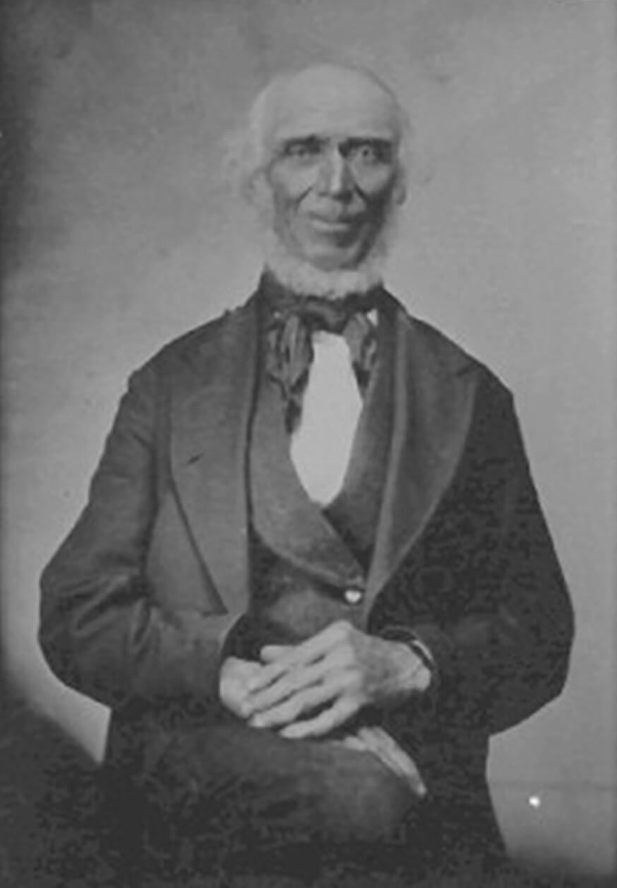
I have lingered a while with the Van Buren family because they were the first to settle on our land and, frankly, because they were African Americans in what was a very white world. I will tell their story in more detail in another place. However, as this is a history of the property, I will move on with that swiftly developing story.
In 1881, Julia, Mary and Cora left their home on Lake George and traveled out to Amboy, Illinois. Their purpose was to deliver Cora to her father, Benjamin, Jr., who was now living there with a wife and family. Whether the sisters had planned to stay or expected to go back to Lake George we do not know, but if their racial background had been an obstacle to marrying in Hague, it was not so on the frontier of Illinois. Within three years all three women were married. They never returned.
Now only Martin, Hiland, William and Charlie remained on the farm. Charlie would soon move sixty miles west and settle down in Wells, New York, where he married and had a flock of children. William found work, bed and board at a newly established hotel nearby. In 1885, J.J. Wilson, a businessman from New York, purchased the land just south of Van Buren Bay. He expanded the existing small rooming house, built several new structures, and laid the foundations of a successful summer resort. It was he who named the inlet in front of his property Silver Bay. Judge Wilson, as he was known, called his place Brookdale Farm and his hotel Silver Bay House. I call William the first emp.
Of Hiland and his older brother Martin, Hiland seems to have been the more responsible. Even in the census of 1880, when Julia had title to the land, Hiland is listed as the householder. And so, when Walter Gillette made his appearance on the scene, he went to talk to Hiland. Gillette was a doctor from New York City. He was probably staying at Silver Bay House when he discovered Van Buren Bay and decided he would like to buy the Van Buren farm there. He offered Hiland a deal: if Hiland could persuade Julia to sell the property to him, Gillette would buy it from him for a substantial profit.
In October 1885, Julia Van Buren Holcomb, now living in Illinois, sold the property to Hiland for $1,000. Two weeks later Hiland sold it to Gillette for $1,700. Gillette must have financed the whole operation. He had the land surveyed,11 hired the lawyer to draw up two deeds of sale, and must have lent Hiland the money to pay Julia. We do not know whether Hiland shared the $700 profit with his brothers. We do know that Hiland bought land in Hague, on Dodd Hill Road. He and Martin lived and farmed there for some years before Martin married and bought land of his own just across Graphite Mountain Road from the cemetery. Interestingly, that place was described as the “Van Buren Farm” in a contemporary Ticonderoga newspaper story.
Walter Gillette wasted no time. He had come to stay and he immediately began to put down his roots. He built his house at the highpoint on the Sabbath Day Point Road,12 with a beautiful view looking down over Van Buren Bay.
Renovated and expanded, it is now known as Bob and Lee Woodruff’s cottage. Built in 1886, it is the oldest house on our bay.13 He also built a barn down the road, now entirely changed, unrecognizable, with a completely different roof line and a wrap-around screened porch.14 Some of us still call it the Velte Cottage though it is now owned by the Hall family. I think it was Gillette’s intention to graze cows on Benjamin Van Buren’s sheep pasture and perhaps he did. The next owner of the land certainly did.
Gillette even tried to change the name of our cherished inlet from Van Buren Bay to Gillette Bay. When J.J. Wilson published a brochure promoting his Brookdale Farm on Silver Bay, he included a small map showing not only the immediate area around the hotel but also the properties to the north, Dr. Gillette’s farm and his own Hazle Point Farm. He had recently purchased that land, comprising most of Ellis Lot 96, from the Braisted family, who retained a small triangle also shown on the map.
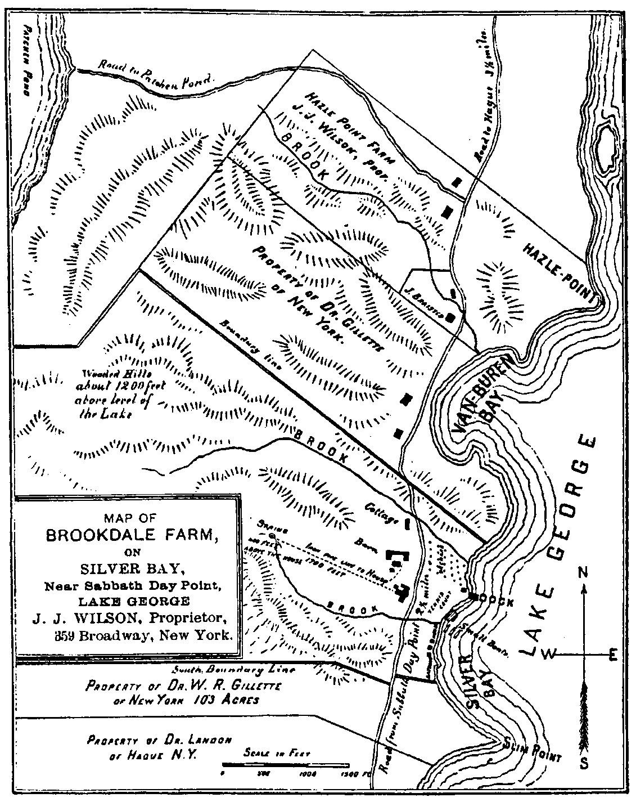
The first printing of the brochure in 1889 shows Lot 97 as the property of Dr. Gillette of New York. It even shows the house and barn that he built. The Van Buren cabin seems to have disappeared, but not Van Buren Bay. A second version of the brochure, printed a few years later, is identical to the first except for one change. Van Buren Bay had been replaced by Gillette Bay.15
Fortunately, that name did not stick. It was the next owner of the property, another rich white man, who, either by intent or by chance, changed the name of the bay to Oneida, after his naphtha powered launch, and the original name of the bay and the poor black man who lived beside it for thirty years were almost forgotten.
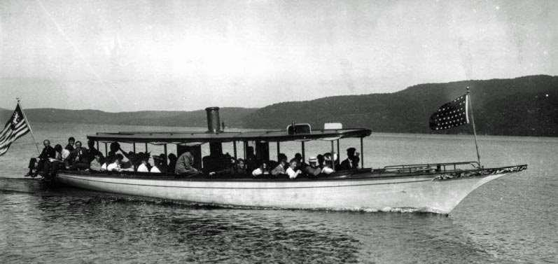
Sometime in about 1891 or 1892, Silas Paine and his wife Mary spent a July vacation at Judge Wilson’s Silver Bay House. They immediately fell in love with the area. One day, we are told, they walked out to what is now known as Tower Point. Looking at the lake from north to south as far as he could see and then up to Sunrise Mountain, Paine declared, “If I can, I will buy all of this.”16 I assume that he was looking at Sunrise Mountain and Van Buren Bay when he said that, though as a wealthy Standard Oil Company executive, he just might have thought that he could buy all of Lake George.
He started small, buying four acres of land from Judge Wilson in 1892 along the northern border of the Brookdale Farm property. There he built the rather grand Victorian cottage that we have come to know as Paine Hall. Just a few years later, in 1896, he was able to buy the rest of Tower Point and the Van Buren farm from Walter Gillette, who had already moved on. In 1897, Paine also bought Brookdale Farm and the surrounding land extending to Sunrise Mountain and Jabez Pond.
That year he began the expansion of Silver Bay House into a large, three-story hotel, planning, it seems, to promote Silver Bay as a fashionable summer resort. But then, surprisingly, he sold that property to the International Committee of the YMCA in 1902. They wanted it for a summer missionary training school and conference center and Silas and Mary Paine were pleased to be able to support that worthy undertaking. And so the Silver Bay Association was born.17
Walter Gillette passes out of our history, but before we lose sight of him completely, we might take note of where he went. Evidently, he had found a new absorbing interest. He swapped his bay for a peninsula, buying all or most of Bluff Head in Hulet’s Landing, and establishing a new home and farm there. Until recently, his red barn was still visible on the property. More permanent was his contribution to the church at Sabbath Day Point. He was part of the planning and building of the Grace Memorial Chapel and donated all of the stained-glass windows there, which are given in memory of his parents and other family members. I have a mental image of Walter Gillette and his family, in their Sunday best, crossing the lake from Bluff Head to Sabbath Day Point in their own elegant launch, on their way to worship in that lovely chapel.
Having fulfilled his dream of “buying all this” Paine now set out to develop his property and, in the process, began the transformation of Benjamin’s quiet wooded farm, the scene he had loved at first sight, into something more like the busy Van Buren Bay we know today. He and Mary Paine were also good Christians18 and must have been happy about their decision to sell the property to the YMCA. Furthering their support for its plans, they decided to offer plots of land to staff and faculty members of the missionary training school, and to missionaries themselves, where they could build their own summer homes, laying a foundation for a community of like-minded folk. They hired a local man, Captain Walter Watts, to survey the land they had purchased and divide the buildable areas into small lots. By 1902 they were ready to offer them for sale.
But before that happened, they had already sold a small portion of their land. In fact, the sale happened so soon after their purchase that I suspect that Gillette had already made some kind of commitment to the buyers, which the Paines then honored. In 1897, Silas and Mary Paine sold Franklin and Helen Griffin19 a piece of land in the south-east corner of their property. With the lake shore as the base of a rough trapezoid, the boundary on the north ran from the lake, at the outlet of a small stream, along the north border of Lot 97. The southern boundary began at “an ash tree” near the lake and ran north along a seasonal stream until it reached a point a little beyond where Route 9N lies today where it turned north-east and ran to where it intersected the north boundary. It is shown as Lot 20 on Walter Watt’s map. In all, it comprised three acres.
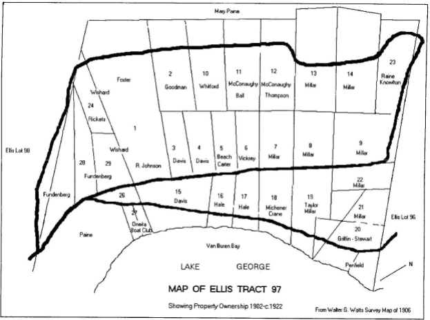
The Griffins were from Hague. They had lived in Bolton earlier and would later move to Ticonderoga. They were local people, not summer visitors. The house they built in 1898 was designed, I suspect, as a vacation rooming house, a fairly typical source of income for Hague homeowners at that time. They put in a dock and had at least two boats, as shown in the picture on page 10. In 1901, their son Walter, on behalf of his parents, bought one additional acre, an adjacent triangle of land to the south. A later owner of that property, Robert Cole, told me that his house was built on the site of “the Griffin barn.” That might have been for the horse that pulled the carriage shown in the picture below. It would seem, from the pictures, that the Griffins were there to stay.
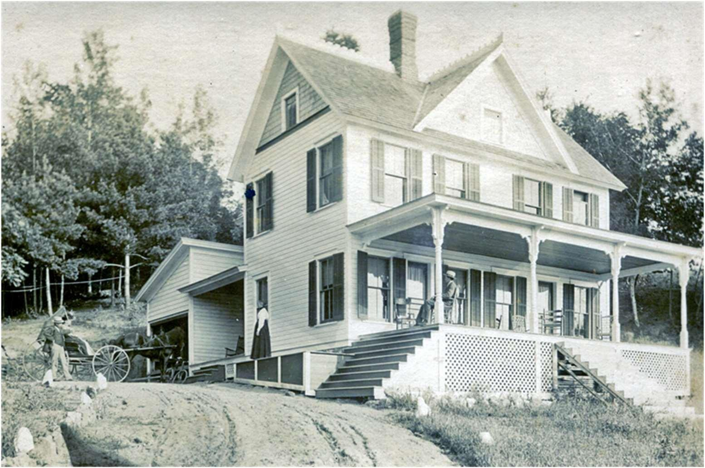
However, in spite of this promising beginning, the Griffins kept their property for only a few years. Perhaps all the holiness emanating from the missionary training school at Silver Bay was cramping their style and discouraging the clientele they had expected to attract. In 1903, they sold their four acres of land and buildings to Charles K. Ober, a member of the International Committee of the YMCA and on the board of the summer school and conference center. He kept it only two years before selling it to the Silver Bay Association, “to round out (its) holdings.”20 Indeed, for the next few years, the house may have been used by YMCA leaders from the missionary training school. At some point the place became known as “The Glen Cottage.”
Meanwhile, Silas and Mary Paine were busy selling off their house lots. Within just a few years all had been taken and, in keeping with their intention, all the new owners were either missionaries themselves or were in some way connected with the Silver Bay Association. Terrace Road became known as Saints Roost.21 The term might have been applied to the whole of the property known once as Ellis Lot 97, or “the Benjamin Van Buren farm.”
In 1902, Charles and Margaret Ried Michener purchased the Paine’s Lot 18 on the Silver Bay Road. Michener was a member of the International Committee of the YMCA and headed the committee responsible for planning and implementing the first conferences at Silver Bay. He would later be named director of the Silver Bay Association and head of the boys’ school that used the property in the offseason from 1917-1932, but that is another story. His wife Margaret was, we think, an architect and was probably responsible for designing the beautiful “camp” that they put up on their land. With its wide porch and graceful roof lines, it was and is a beautiful house. The interior beams and porch rails were of spruce and cedar, said to have been cut and brought down from Jabez Pond, while the exterior was covered with hemlock bark. In recent years we have associated that property with Dave and Terry McConaughy, though it has now been sold to a new owner.
Surprisingly, having built such a lovely house, the Micheners made the difficult decision to sell that property and build elsewhere. According to tradition, the Micheners’ daughter suffered from poliomyelitis. Doctors advised that she should take regular exercise in the water, and consequently the Micheners began looking for property on the lake. By then there was not much lake front property available in the area, but the Micheners found one place that suited their needs and used their influence to persuade the owner to sell it. In 1907, the Silver Bay Association sold a small parcel of land, the northeast corner of the Glen Cottage property, to Margaret Michener. The property line on the north started from where a small stream entered the lake, ran up the boundary line of Ellis Lot 96 to the Silver Bay Road, then south along the road to a point marked by an iron pipe, then back to the lake to “an iron pin in the outlet of a small drain” and then along the lake shore to the point of beginning. In other words, it was the land below the Siver Bay Road, enclosed on the north by the Pickert property line and on the south by a line running from the road to what is now the canoe slip. The land that now holds the cabin, the lodge and the tennis court remained part of the Glen Cottage property.
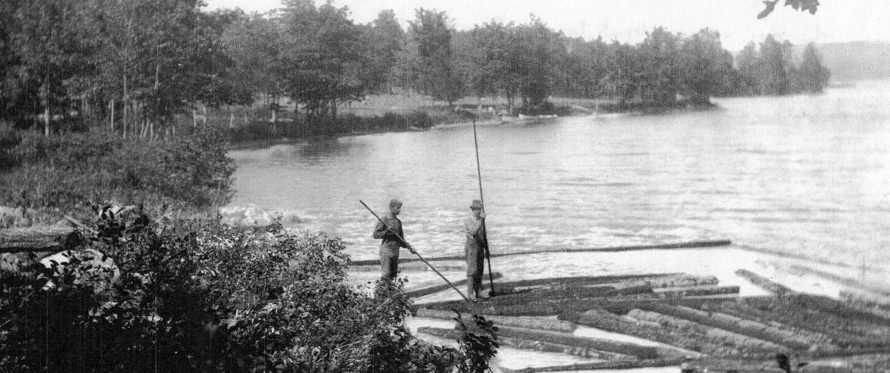
If, as tradition holds, Margaret Michener was the architect, she designed another work of art for the new property.22 Like her first Van Buren Bay cottage, this one was built in the Adirondack camp style, with spruce beams and hemlock bark siding, with white Tudor-like gables and geometric roof lines. The interior of the house reflected the same concern for style. It was furnished with bent wood and twig furniture, built-in shelves, lockers and cupboards, and even a birch log bed. But we know all that. What we do not know is why, after holding the property for less than two years and having just completed the construction of a beautiful house, the Micheners once again moved away and left it all behind. In my earlier book, I suggested that there had perhaps been some tragedy involving their daughter, but years later a friend told me that he had known her well, that she had outgrown any infirmity she might have suffered, and had lived most of her life in the Southwest. She may have still been with her parents when the family moved back to Silver Bay in 1917, but ultimately, like Georgia O’Keefe, she seems to have given up the beauty of Lake George for a desert ranch in New Mexico.
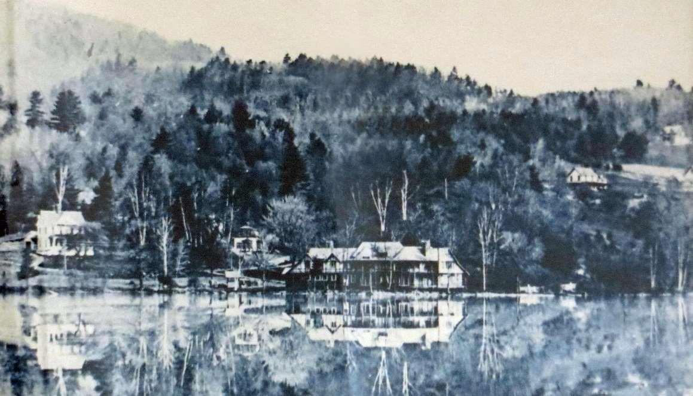
In 1908, the Micheners sold their house on the lake to Charles and Luella Kilborne for $6,000. Kilborne was President of the Silver Bay Association. He had been born and raised in western New York, and then moved to New York City where he found work with a brokerage firm on Wall Street. Luella was born in
Hawaii, the youngest of five children born to American Board missionaries. Her mother died shortly after her birth and she was raised by her father, Claudius Andrews, who, it is reported, had a hard time controlling this obedient but very active child, full of “rollicking vivacity.” She carried that spirit into her marriage to Charles Kilborne, whom she met while staying in New York with her uncle. The couple settled in Orange, New Jersey. He continued his work in New York but was active in his local YMCA and became president of the YMCA Boys’ Committee of New Jersey. He was well known to the leaders of Silver Bay Association, many of whom were also from New Jersey. They must have invited him to join the Board of the Silver Bay Association and then gone on to elect him President.
By all accounts, the Kilbornes loved their new summer cottage. Charles and Luella complemented each other. He was a small man, 120 pounds, steady but pleasant and fun loving. She was a large woman, taller than he and of ample girth, full of humor, exuberance and generosity.23 They probably invited students from the School to visit and enjoyed entertaining friends and family for longer stays. I can picture Luella with her three sisters – Lucy, Lorrin, and Fannie – sitting on the porch, enjoying the lake, laughing together and sharing stories from that other Paradise across the seas that they knew so well. Lucy, who was unmarried, liked the Kilborne cottage so much that she decided to buy a place of her own, if something became available. Or so it would seem.
Miraculously, a very convenient place just across the road became available. In September 1909, the Silver Bay Association sold the Glen Cottage and all the land still associated with it24 to Lucy C. Andrews of Orange, New Jersey for $3000. But then, less than a month later, in October 1909, Lucy Andrews sold Charles Kilborne all her lake front property below the Silver Bay Road for $500, with one important provision: “Said Lucy Andrews expressly reserves for herself free access to Lake George by means of a right of way over a strip of land 12 feet in width at the southwest end of the property hereby conveyed to Charles Kilborne.”25 Even with this limitation, Charles Kilborne had doubled the size of his property and made room for another cottage, if needed, and perhaps a tennis court. His children were already in their twenties and he might have been hoping to establish a large family retreat where they could bring their own children. And now sister Lucy owned the property right across the road, which she might make available to family members if all the beds in the cottage were taken.
One begins to decern a certain amount of insider trading in all these transactions dealing with the Glen Cottage property. I am curious about these last two sales: Where did Lucy, a single woman, find the money, $3,000, to buy the property? Did Charles, a Wall Street broker, have money to finance the transaction - even after he had just spent $6,000 buying the Michener property? Why did the Board members of the Silver Bay Association so easily part with pieces, and then the whole, of the Glen Cottage property? Did any of them express concern that the recipients of the properties were also members of the Board? And there was yet one more insider transaction to take place.
While Kilborne was President of the Board of the Silver Bay Association, Thornton Penfield was the General Secretary. Penfield was a member of the International Committee of the YMCA and former Secretary of the Brooklyn YMCA. He had been involved in the YMCA’s project at Silver Bay right from the beginning and was one of the men instrumental in persuading Silas Paine to sell his property to the Y.26 In the summer of 1912, Kilborne informed Penfield that his firm was going out of business, that he intended to resign his position at Silver Bay and was anxious to sell his summer home.27 Thornton and Martha Penfield had been planning to buy land and put up a small cottage, but nothing as large as the Kilborne house. Kilbourne encouraged them to make him an offer. As the story goes, Thornton and Martha Penfield, with the help of his mother Charlotte Devins, made the best offer they could and were surprised when Kilborne said, “The property is yours.”28
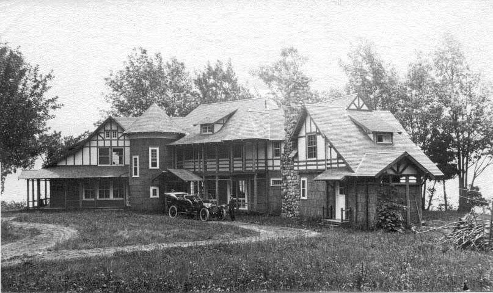
It was an amicable transfer of ownership. The Kilbornes departed on friendly terms with the Penfields and even visited occasionally in the coming years. For the Penfields the purchase was an immediate success. To have a large and beautiful house right on the water must have been beyond anything they had hoped for. It was a little overwhelming. Martha Penfield was at first concerned about the number of doors to the outside and the number of glass window panes that would have to be cleaned. And on one picture of the new place she wrote “slab sided silo looking for a name.” She should not have worried. The place quickly became known as the Penfield Cottage (like the Hume Cottage or the Crane Cottage), and then simply Penfield Cottage.
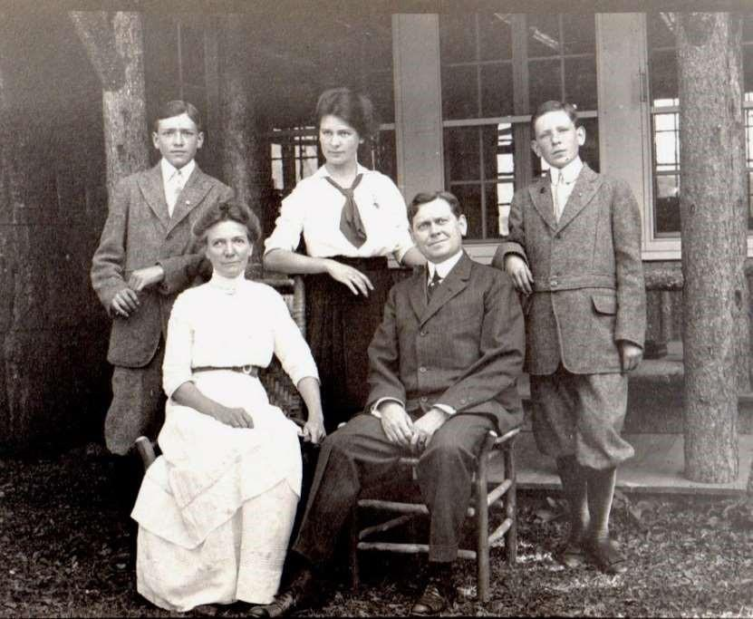
The family was small, but they must have filled the cottage with good cheer. Thornton and Martha had three children, Charlotte, Thornton Jr. and Paul, or Chicko, Torno and Paulo, as they were known. Thornton’s widowed mother, Charlotte Devins, or Grandmother Devins, was a permanent member of the family. As the family grew, there would be many more Marthas and Charlottes – and others – to fill the cottage, but never so many as to push out that good cheer. To accommodate the growing numbers, a small Cabin was built and then the Lodge. Thornton and Martha passed the property on to their children, who passed it on the theirs. It is now owned by all the descendants who choose to join their cousins in ownership through the Penfield Cottage Trust.
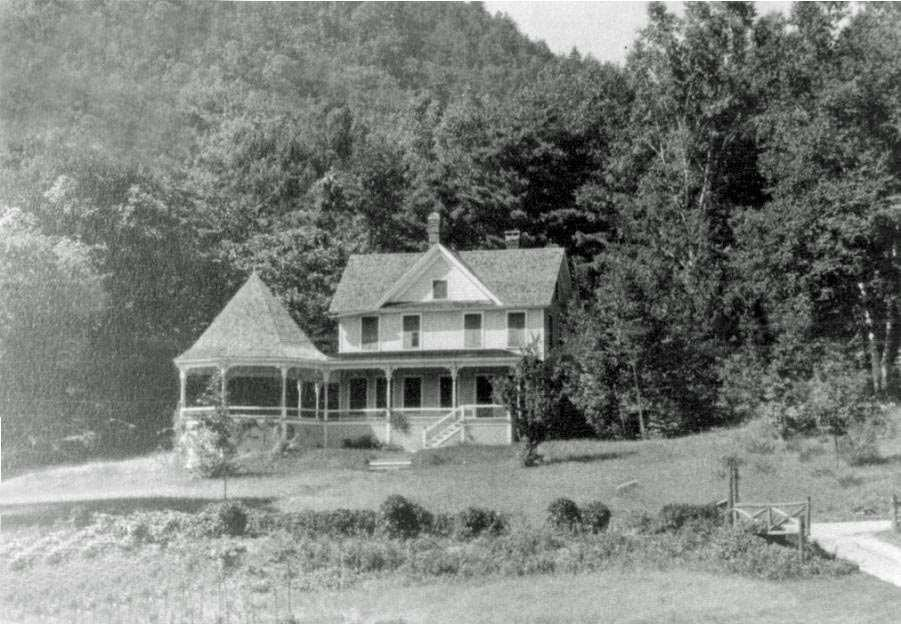
And what was happening at that place across the road? Lucy Andrews seems to have been very happy with her new property with its close proximity to her sister’s cottage. She is responsible for adding the distinctive rotunda extension to the porch. I like to think that she was inspired by the similarly shaped, though smaller, arrangement of the Kilborne’s porch and the pleasant meals and good conversation she had enjoyed there around the table with her sisters and other guests. She must have been very disappointed when the Kilbornes sold their property. She held on to the cottage for a few more years, and perhaps the Kilborne family vacationed there with her, but without easy access to the lake, it was not the same. In 1917 she sold the property to - - - of course, Thornton Penfield. Tradition holds that he bought the place to prevent it from becoming a rooming house again where alcohol would likely be available. He kept the property for only three years, selling it in 1920 to William and Elizabeth Stewart.
We know little about the Stewarts. They came from Brooklyn and it is possible that Thornton Penfield knew them there. But even if he did, the Penfields and the Stewarts did not develop a very close relationship at the lake. The Stewarts did not fit into, or were simply not interested in, the activities of the Silver Bay Association that so absorbed the Penfields. Still, they must have been good neighbors, and it is clear that they had come to stay. They remodeled the house extensively and added a two-car garage with an apartment above it for their gardener/chauffeur and his wife, the cook.29 Mrs. Stewart put in a beautiful flower garden, of which, alas, only the white hydrangeas remain. And finally, the Stewarts bought a small piece of land on the lake off Oneida Drive where they had access to the lake for swimming and where they constructed a boathouse.
The Stewarts passed the property on to their son-in-law Reginald Jewell. We know even less about him, except for a few snippets. He had a strong aversion to his sister-in-law but she insisted on her right to spend summers in the Glen Cottage, even after her sister died. When he found he could not remove her, he bought another house for her, on Watt’s Hill Road, just across from the Post office. Freed from her prying eyes, he began to invite a series of “nieces” to visit. The Penfields were not amused.30
In 1961, Reginald Jewel sold the Glen Cottage and the Boathouse to Thornton and Ruth Penfield. Thornton B. Penfield, Jr. was minister of The First Presbyterian Church of Yonkers, New York. He had persuaded his church to give him two full months of vacation every summer, which he always wanted to spend at Silver Bay. He and Ruth and the children could count on spending one month at Penfield Cottage but usually had to find somewhere else for the second month. Their daughter Char remembered staying in several other Van Buren Bay cottages, including the Crane cottage, the Vale cottage, the Millar cottage, and her favorite, the Wiley cottage with its Adirondack style gazebo hanging out over the water, where her brother Thorny liked to sleep. Those were nice enough places to stay, and the family was always welcome at Penfield Cottage for swimming and boating. But Torno and Ruth could see that the larger family was growing larger and that inevitably there was going to be a crunch for time and space at the Cottage. So, when the Glen Cottage came up for sale, they jumped at the opportunity. They sold their interest in Penfield Cottage to Charlotte Atwater and Paul Penfield and moved across the road. Ruth promptly renamed the property Birch Glen.
Thornton and Ruth left the property to their children, Thornton B. Penfield, III and Charlotte Gosselink. When Thorny and Diane wanted to buy a place of their own in 1987, Char and Chuck bought their share. The property is now held in the name of the Gosselink Silver Bay Partners L.P. and belongs to their children, James and Robert Gosselink and Rebecca Johannes. It is enjoyed by the whole Gosselink/Johannes family and their friends, as well as members of the larger family across the road, who sometimes need a place to stay when all the beds at the cottage are taken.